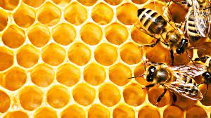

Como é feito o mel?
O mel é formado pela reação dessas substâncias com o néctar coletado das flores. A invertase converte a sacarose – tipo de açúcar contido no néctar – em dois outros açúcares: glicose e frutose. A glicose oxidase, por sua vez, transforma uma pequena quantidade de glicose em ácido glicônico, que torna o mel ácido, protegendo-o de bactérias que o fariam fermentar. Agitando as asas para secar a água, presente em grande quantidade no néctar, as abelhas desidratam o mel, matando outros microorganismos.
1. A fabricação do mel começa com a coleta do néctar nas flores. Ele é guardado em uma bolsa no corpo da abelha e levado para a colméia
2. Glândulas localizadas na cabeça das abelhas secretam duas en...
3. Uma enzima, chamada invertase, transforma o néctar em glicose e frutose. A outra, glicose oxidase, lhe confere acidez, impedindo sua fermentação
4. Batendo as asas, a abelha seca o excesso de água...
02
03
04